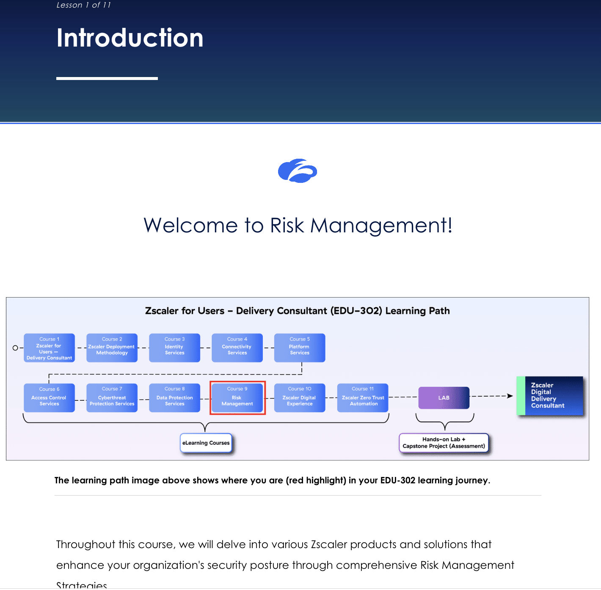

Zscaler's Risk Management suite — Risk360 (risk quantification dashboards), UVM (Unified Vulnerability Management), EASM (External Attack Surface Management), Deception, ITDR (Identity Threat Detection & Response), and Breach Predictor. Strategic risk frameworks, third-party integrations (Tenable, Okta, Entra ID, PingFederate, ZIdentity), data-driven reporting via Zscaler Data Fabric, and stakeholder consultation patterns.
Risk Management is where Zscaler stops being a security product and starts being a boardroom product.
Sections 6 – 8 hardened the platform against attackers. Section 9 asks a different question: how do you quantify, prioritise, and report risk so that the customer's CISO can defend the security spend to the board, and the SOC can act on the right things first. The verbs change too — Develop, Implement, Provide, Analyze, Collaborate.
💭THINK FIRST · OVERVIEW
Outcomes: Develop / Implement / Provide / Analyze / Collaborate. Notice the shift — earlier sections asked the consultant to design and operationalise security features; Section 9 asks them to develop strategic frameworks and collaborate with stakeholders. Frameworks live in slide decks and board meetings, not in policy tables.
"Risk Management" sounds like a CISO concern, not a Zscaler concern. What does Zscaler bring to risk management that a Zscaler-less customer with traditional GRC tools can't get?
The course covers six distinct products (Risk360, UVM, EASM, Deception, ITDR, Breach Predictor). Why does Zscaler split risk management into so many products instead of one unified "Risk" feature — and what does the consultant's product-choice conversation look like?
The final outcome is "Collaborate with stakeholders." Why is collaboration its own learning outcome here when it wasn't in DLP or Cyberthreat?
Q1 — MODEL ANSWER
Zscaler sees the actual telemetry — every connection, every blocked threat, every user behaviour across the entire Zero Trust Exchange. Traditional GRC tools survey what the customer thinks their risk is; Zscaler measures what their risk actually is. Risk360 + UVM + EASM are the platform's way of turning that telemetry into a quantified, prioritised, reportable risk posture. The CISO finally has numbers to point to instead of "we feel covered."
Q2 — MODEL ANSWER
Each product targets a different risk surface: Risk360 = overall risk quantification + dashboards; UVM = vulnerabilities (CVEs); EASM = external attack surface (your public IPs / domains / certs); Deception = active-defence honeypots; ITDR = identity-side threats (credential theft, privilege escalation); Breach Predictor = predictive ML. A customer probably won't buy all six on Day 1 — the consultant's conversation maps each product to a specific business question ("can we quantify cyber risk for the audit?" → Risk360; "do we know what's facing the public internet?" → EASM).
Q3 — MODEL ANSWER
Because Risk Management is the layer where technical findings have to be translated into business actions. DLP and Cyberthreat outputs are mostly self-evident to the SOC. Risk Management outputs (CVE backlogs, attack-surface inventories, identity hygiene gaps) only become decisions when CISOs, finance, application owners, and platform teams agree on priorities. Without collaboration, the risk reports become wallpaper.
COURSE OVERVIEW
Welcome to Risk Management
Throughout this course, we will delve into various Zscaler products and solutions that enhance your organisation's security posture through comprehensive Risk Management Strategies.
By the End of This Course, You'll Be Able To:
Develop strategic risk management frameworks using Zscaler Risk Management suite.
Implement automation and integration strategies for comprehensive risk insights.
Provide actionable risk management plans tailored to organisational needs.
Analyze and report risk posture using advanced visualisation techniques.
Collaborate with stakeholders to address risk priorities effectively.

The EDU-302 learning path diagram showing where Section 9 (Risk Management Services) sits in the full Delivery Consultant course sequence — use this to orient yourself before diving into the section content.
Analogy
Risk Management is the insurance underwriter walking through your warehouse before quoting your premium. They count exits, inspect sprinklers, check the locks on the rear door, ask who has the keys, look at how often you ran your fire drills, and read your incident log. They don't install safety equipment — they read your existing setup, quantify the risk you carry, and tell you what's most likely to burn down. The factory owner uses the report to fix the worst three things and to argue with finance for the budget.
📷 A1.png — add this image to the folder
Flat minimalist cartoon illustration of an insurance underwriter inspecting a warehouse as an analogy for Risk Management. Wide composition with a cutaway warehouse. Centre foreground: a friendly underwriter in a smart vest with a clipboard, ticking boxes while walking past tiny labelled hazards — a leaky pipe (vulnerability), a propped-open back door (attack surface), a single key dangling from a lock (identity hygiene), a smouldering wastebasket (active threat). To one side, the warehouse owner in coveralls looks over the underwriter's shoulder at a final glowing scorecard with a risk rating. Soft warm warehouse lighting, plants by the office window. Clean geometric shapes, flat illustration style, bold outlines, simple cartoon characters, no text labels, no UI elements, educational infographic feel, modern tech-analogy aesthetic.
ASK A QUESTION
ADD A NOTE
LESSON 2 · INTRODUCTION TO RISK MANAGEMENT
Foundational Principles
In this lesson, we explore the foundational principles of Risk Management and why it is critical for organisations in today's evolving threat landscape.
1
Identifying Threats
Understanding various types of cyber threats, such as external attacks, insider threats, and environmental risks.
2
Assessing Risks
Prioritising risks based on their potential impact and likelihood.
3
Mitigating Risks
Deploying controls to minimise vulnerabilities and maintain operational continuity.
4
Introduction to Risk360
An overview of how Zscaler's Risk360 quantifies risks and provides actionable insights.
5
Unified Vulnerability Management (UVM)
Tool to prioritise and remediate vulnerabilities based on context and severity.
💭THINK FIRST · PRODUCTS & SERVICES
Six products: Risk360, UVM, EASM, Deception, ITDR, Breach Predictor. Each one addresses a different layer of "what might go wrong" — quantification, vulnerabilities, surface, lateral movement, identity, prediction.
EASM (External Attack Surface Management) discovers and inventories the customer's public-facing assets. Why is this a fresh problem in 2026 when port-scanners have existed for decades — what does EASM bring that nmap doesn't?
ITDR focuses on credential theft and privilege escalation. How is this categorically different from a traditional IPS or EDR — what does "Identity" being its own threat category say about modern attack patterns?
Q1 — MODEL ANSWER
nmap finds open ports; EASM finds unknown assets. A modern customer has cloud subscriptions across AWS / Azure / GCP, marketing-launched microsites no one tracks, expired certificates on dev domains, S3 buckets that should be private but aren't. EASM crawls the customer's brand, DNS, certificates, public IP ranges, and exposes the shadow inventory — then continuously monitors. The output isn't "port 22 is open"; it's "you have 47 web properties, here are the 6 you didn't know about."
Q2 — MODEL ANSWER
Modern breaches don't usually start with malware on an endpoint — they start with a phished credential, a leaked API key, or an over-privileged service account. EDR sees the endpoint; IPS sees the network; neither sees "this user just authenticated from Vietnam at 3 AM and tried to escalate to domain admin." ITDR sits at the identity layer and catches that pattern. Identity is its own threat category because identity is now the perimeter.
LESSON 3 · RISK MANAGEMENT PRODUCTS & SERVICES
Zscaler's Comprehensive Suite
This lesson focused on Zscaler's comprehensive suite of risk management products.
RISK360
Risk360
A powerful risk quantification and visualisation framework for remediating cybersecurity risk. It maps risk data from external sources and your Zscaler environment to generate a detailed profile of your risk posture. The Risk360 model leverages over 100 data-driven factors across the four stages of attack.
UVM
Unified Vulnerability Management
Zscaler Unified Vulnerability Management solution taps into an aggregated, comprehensive remediation program. UVM is powered by our Data Fabric for Security, which ingests data from traditional vulnerability and asset-exposure tools (e.g. internal pentests, cloud security findings, and container scanning), feeds, and applications.
EASM
External Attack Surface Management
Provides continuous visibility, risk assessment, and remediation recommendations so you can reduce exposure of your internet-facing assets. By employing open-source intelligence (OSINT) and advanced scanning techniques, plus Zscaler ThreatLabz research, the platform identifies and analyses your exposed assets, providing the alerts and findings you need for proactive defence.
DECEPTION
Zscaler Deception
It's a key component of the security services in the Zscaler Zero Trust Exchange. You can think of Deception as a threat-detection layer (a Zero Trust Architecture). Zscaler Deception will help you detect and stop stealthy attacks that have bypassed existing defences. These attacks could be anything ranging from hands-on-keyboard ransomware operators to malicious insiders.
ITDR
Identity Threat Detection & Response
It enables Zscaler's security teams to investigate thoroughly and allow automatic remediation, enhancing danger signals with user-specific data. This solution improves your Zero Trust posture by swiftly detecting and fixing risks and misconfigurations, providing precise, detailed instructions to safeguard user identities.
BREACH PREDICTOR
Breach Predictor
It provides AI-driven Multi-Attack Factors, Techniques, and Procedures (TTPs), enabling real-time insights on affected users and helping to understand and stop attacks underway.
Analogy
The six products are six different inspectors visiting the same building. The risk surveyor (Risk360) writes the executive report. The plumbing inspector (UVM) lists which pipes need fixing. The drone surveyor (EASM) maps the roof, the back-alley entrance, and the chimney no-one remembered. The undercover security tester (Deception) leaves tempting fake briefcases around to see who picks them up. The badge auditor (ITDR) checks who's using which keys and whether their hours look normal. The weather forecaster (Breach Predictor) tells you the storm front is two days out. Same building, six lenses.
📷 A2.png — add this image to the folder
Flat minimalist cartoon illustration of six different inspectors visiting one building as an analogy for the Zscaler Risk Management suite. Wide composition with a cutaway suburban office building. Six cheerful inspectors visible across the scene each with a different tool and a small label: (1) a risk surveyor with a glowing risk-rating scorecard (Risk360); (2) a plumber with a wrench checking pipes (UVM); (3) a drone surveyor with a flying drone mapping the roof and back alley (EASM); (4) a covert tester placing a tempting fake briefcase in a corridor (Deception); (5) a badge auditor at a turnstile checking ID cards under a clock (ITDR); (6) a weather forecaster pointing at a small dashboard predicting an incoming storm (Breach Predictor). Warm afternoon light, plants by the entrance, cheerful round-faced characters. Clean geometric shapes, flat illustration style, bold outlines, simple cartoon characters, no text labels, no UI elements, educational infographic feel, modern tech-analogy aesthetic.
ASK A QUESTION
ADD A NOTE
LESSON 4 · ZSCALER RISK MANAGEMENT OVERVIEW
In-Depth Technical Overview
This lesson provided an in-depth technical overview of Zscaler's risk management framework, focusing on implementation and hands-on configuration.
1
Configuring Risk360 Dashboards
Setting up and customising dashboards to visualise security metrics.
2
Alert Systems
Automating alerts for critical risks based on defined thresholds.
3
Managing External Attack Surfaces
Tools to identify and resolve vulnerabilities in public-facing assets.
4
Role of Predictive Analytics
Leveraging machine learning to predict breaches and assess risk probability.
LESSON 5 · ADVANCED RISK MITIGATION TECHNIQUES
Advanced Integration and Mitigation
This lesson focused on advanced integration and mitigation techniques.
1
Integrating UVM with SIEM Platforms
Automating vulnerability tracking and remediation workflows.
2
EASM in Hybrid Environments
Strategies for managing cloud and on-premises risks.
3
Deception Deployment
Configuring honeypots to identify and neutralise attackers.
4
Enhancing Identity Protection
Using ITDR to prevent identity-based breaches, such as credential theft and privilege escalation.
💭THINK FIRST · ADVANCED RISK ASSESSMENT
Risk360 framework — overview of architecture + data sources (ThreatLabz, third-party tools). Evaluating threats with predictive analytics. Prioritising risks by business impact + organisational objectives.
"Aligning risk prioritisation with organisational objectives" sounds easy in a slide. In practice, why does Sales' "we must close the quarter on AWS" routinely beat Security's "this S3 bucket is exposed" — and what's the consultant's leverage in that conversation?
Predictive analytics for breach prediction implies the model has been trained on real breach data. What does that say about the customer's relationship with Zscaler's broader telemetry — and what objections might a privacy-conscious customer raise?
Q1 — MODEL ANSWER
Security loses because their argument is abstract ("there's exposure") while Sales' is concrete ("$3 M deal closes Friday"). The consultant's leverage is to put a dollar number on the exposure — Risk360's quantification translates the bucket leak into "$X expected loss from a probable breach class," and the conversation shifts from priority-versus-priority to risk-vs-revenue. The decision still goes either way, but it goes with eyes open.
Q2 — MODEL ANSWER
Zscaler's models work because they see aggregate patterns across many customers' telemetry — phishing trends, ransomware lineage, credential-stuffing waves. A privacy-conscious customer will worry that their data is being "mined" for someone else's benefit. The answer is the standard SaaS contract: aggregate anonymised threat intelligence is shared; individual customer data is not. The consultant's job is making that contractual boundary visible early in the conversation.
LESSON 6 · ADVANCED RISK ASSESSMENT STRATEGIES
Strategic Risk Management Frameworks
In this section, we explore the Development of strategic risk management frameworks using Zscaler Risk Management suite.
Understanding the Risk360 Framework
Overview of Risk360's architecture and capabilities.
Data sources leveraged for risk quantification (e.g. ThreatLabz, third-party tools).
Evaluating Threats
Using predictive analytics for breach prediction.
Case studies on high-impact risk scenarios.
Prioritising Risks
Assigning severity scores to risks based on business impact.
Aligning risk prioritisation with organisational objectives.
ASK A QUESTION
ADD A NOTE
LESSON 7 · INTEGRATION WITH THIRD-PARTY TOOLS
Automation & Integration for Comprehensive Risk Insights
Once the risk has been assessed, it is important to implement automation and integration strategies for comprehensive risk insights.
Tenable Integration
Steps to integrate Risk360 with platforms like Tenable.
Automating workflows for risk-related information; categorises the risk under Risk360's External Attack Surface category; quantifies risk by taking into account the CVSS score, Vulnerability Priority Rating (VPR) score, exploit code maturity, and threat recency.
Identity Provider Integration
Using Okta, Entra ID, PingFederate, ZIdentity for seamless user authentication.
Enforcing MFA and adaptive access controls.
Cloud Platforms and Risk Management
Integrating Zscaler Risk Management services with ZIdentity.
Risk360 only gets stronger when it pulls signal from outside Zscaler's own telemetry. Tenable feeds the vulnerability surface; Okta / Entra / PingFederate / ZIdentity feed the identity context; cloud platforms feed the cloud-config posture. Without integrations, Risk360 sees only what travels through ZIA / ZPA — and that's the smaller half of the picture.
LESSON 8 · STRATEGIC IMPLEMENTATION
Actionable Risk Management Plans
Once the risk has been identified, let's explore the strategic implementation of actionable risk management plans tailored to organisational needs.
Deploying Deception for Threat Detection
Configuring honeypots for targeted threat detection.
Case studies on successful deception deployments.
Enhancing Identity Protection with ITDR
Detecting and mitigating credential theft and lateral movement attacks.
Reporting vulnerability remediation progress to stakeholders.
LESSON 9 · DATA-DRIVEN RISK MANAGEMENT
Analyse and Report Risk Posture
Zscaler's Data-Driven Risk Management helps to Analyse and report risk posture using advanced visualisation techniques in enhancing an organisation's security posture.
Leveraging Zscaler Data Fabric
Aggregating data from diverse sources for comprehensive insights.
Using financial modelling for risk quantification.
Creating Actionable Reports
Customising dashboards for different stakeholders (CISOs, SOCs, etc.).
Automating periodic risk posture updates.
💭THINK FIRST · STAKEHOLDER ENGAGEMENT
Presenting Findings: data viz + tailoring to technical vs non-technical audiences. Collaborating on Mitigation: aligning recommendations with organisational goals + managing cross-functional teams.
The same Risk360 dashboard has to satisfy a CISO (wants strategic summaries), an SOC analyst (wants drill-down evidence), a CFO (wants dollar figures), and an application owner (wants a list to fix). One dashboard, four audiences. How do you actually solve this — same data, different views, or different dashboards entirely?
Q — MODEL ANSWER
Different views of the same underlying data. CISO gets a one-page exec summary (overall risk score, top 5 risks, trend over quarter). SOC gets the live alert feed with full event detail. CFO gets the financial-modelling view (expected loss, cost of remediation, cost of doing nothing). App owner gets a ticket queue with their team's CVEs and SLA timers. One Data Fabric, four lenses. The consultant's job during stakeholder workshops is to make sure each audience sees their view first, never the wrong one.
LESSON 10 · CONSULTATION AND STAKEHOLDER ENGAGEMENT
Address Risk Priorities Effectively
In this final stage we will learn about Consultation and Stakeholder Engagement to address risk priorities effectively.
Presenting Findings Effectively
Using data visualisation tools to communicate risk insights.
Tailoring presentations for technical and non-technical audiences.
Collaborating on Risk Mitigation Plans
Aligning recommendations with organisational goals.
Managing cross-functional teams for risk resolution.
Analogy
Stakeholder engagement is the doctor's consultation room at the end of a full physical. The patient wants a clean diagnosis, the spouse wants reassurance, the insurance company wants codes, the patient's employer wants to know if they can travel for work next month. Same chart, four conversations — none of which work if the doctor reads them all the X-ray. The consultant chooses the right framing per audience: CISO gets strategy, SOC gets evidence, CFO gets dollars, application owner gets a list.
📷 A3.png — add this image to the folder
Flat minimalist cartoon illustration of a doctor consulting four different audiences after a patient's full physical as an analogy for stakeholder engagement. Wide composition split into four quadrants — each quadrant a small consulting moment with the same friendly doctor at a desk: (1) the patient (CISO) being shown a one-page summary; (2) the patient's spouse (SOC analyst) being shown a detailed evidence chart; (3) an insurance officer (CFO) being shown a dollar-amount estimate; (4) the patient's employer (application owner) being shown a punch-list of action items. The same large X-ray plate is pinned in the centre between the quadrants. Soft warm clinic lighting, cheerful round-faced characters. Clean geometric shapes, flat illustration style, bold outlines, simple cartoon characters, no text labels, no UI elements, educational infographic feel, modern tech-analogy aesthetic.
ASK A QUESTION
ADD A NOTE
RECAP & RESOURCES
In Summary
Advanced Risk Assessment Strategies — explored risk evaluation techniques using Risk360, emphasising predictive analytics and data-driven decision-making to prioritise risks. Delivery consultants learned how to assess risks effectively and align mitigation strategies with organisational objectives.
Integration with Third-Party Tools — integration of Zscaler Risk360 with Tenable, and identity management platforms. This lesson provided hands-on strategies for automating workflows and ensuring comprehensive risk visibility across diverse enterprise environments.
From This Course, You Should Now Be Able To:
Develop strategic risk management frameworks using Zscaler Risk Management suite.
Implement automation and integration strategies for comprehensive risk insights.
Provide actionable risk management plans tailored to organisational needs.
Analyze and report risk posture using advanced visualisation techniques.
Collaborate with stakeholders to address risk priorities effectively.
🧠
60-SECOND PITCH
6 products: Risk360 (quantify) · UVM (vulns) · EASM (surface) · Deception (active defence) · ITDR (identity) · Breach Predictor (predict). 3rd-party: Tenable (vulns), Okta/Entra/PingFederate/ZIdentity (identity), cloud platforms. Data Fabric is the spine that lets one telemetry feed four audiences (CISO/SOC/CFO/App-Owner). Collaboration is the final outcome — risk is only managed if the customer's stakeholders act on it.
Analogy
Risk Management Services is the airline's safety operations centre at 3 AM. Maintenance logs (UVM), weather radar (Breach Predictor), public-flight tracker (EASM), passenger manifests (ITDR), undercover marshals (Deception), and the chief safety officer's morning dashboard (Risk360) all feed into one room. Nobody flies a plane from this room — they decide which planes can fly, which crews need rest, which routes need a divert. The consultant is the architect who installed the room, trained the operators, and connected the feeds.
📷 A4.png — add this image to the folder
Flat minimalist cartoon illustration of an airline safety operations centre at 3 AM as an analogy for the Risk Management Services course summary. Wide composition with a softly lit operations room. Centre: a large round dashboard table where a chief safety officer studies a glowing overall risk score (Risk360). Around the table, six operators at their stations each label-tagged with a tiny icon: (1) maintenance log clipboard (UVM); (2) weather radar screen (Breach Predictor); (3) public flight tracker on a wall map (EASM); (4) passenger manifest pulled up on a tablet (ITDR); (5) undercover marshal silhouette on a side screen (Deception); (6) a comms operator coordinating with the rest of the airline (Stakeholder Engagement). Soft purple ambient lighting, plants in the corner, cheerful round-faced characters working in calm focus. Clean geometric shapes, flat illustration style, bold outlines, simple cartoon characters, no text labels, no UI elements, educational infographic feel, modern tech-analogy aesthetic.